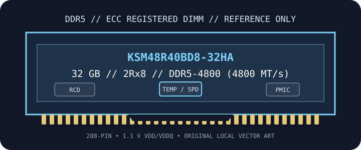

[ MANUFACTURER SKU // MEMORY / RAM ]
Kingston Server Premier KSM48R40BD8-32HA
An individually identified Kingston Server Premier DDR5 ECC Registered DIMM, part number KSM48R40BD8-32HA. The configuration, JEDEC data rate, and timings below describe this exact catalog SKU; Kingston may revise component sourcing, so confirm the full label and SPD on the module being serviced.

EXACT SKU: KSM48R40BD8-32HA. This is a 288-pin DDR5 Registered DIMM (RDIMM) with host-visible ECC. DDR5 on-die ECC is an additional, separate DRAM-internal feature. Confirm the exact SKU, revision, SPD, capacity support and qualified memory population in the platform documentation before installation.
Model specifications
| Manufacturer / SKU | Kingston Server Premier KSM48R40BD8-32HA |
|---|---|
| Capacity / generation | 32 GB; DDR5 SDRAM |
| Rank / chip organization | 2Rx8; 4G × 80-bit module organization; twenty 2G × 8-bit DRAM devices |
| JEDEC data rate / timing | DDR5-4800 (4800 MT/s); CL40; JEDEC timing 40-39-39 at 1.1 V |
| Module format / buffering | 288-pin DIMM; ECC Registered DIMM (RDIMM), with a register/clock driver. Not a UDIMM, LRDIMM or SO-DIMM. |
| ECC status | Host-visible x80 ECC module bus (two x40 I/O subchannels with ECC check bits, per Kingston’s x80 ECC description), plus DDR5 on-die ECC inside DRAM devices. On-die ECC alone is not system-level ECC. |
| Voltage | VDD 1.1 V; VDDQ 1.1 V; VPP 1.8 V; VDDSPD 1.8–2.0 V; values are standard nominal rails, not overclocking voltage targets. |
| DRAM components | SK hynix A-die; component sourcing can vary by revision, so verify physical markings against the exact label. |
| PMIC / module management | An on-module DDR5 PMIC is required for this RDIMM; Kingston’s public SKU sheet does not identify its vendor, so component-level PMIC details should be confirmed from the physical revision if needed. |
| Thermal / sensor notes | Manufacturer operating range 0°C to +95°C; read the onboard thermal telemetry where the platform exposes it and follow the server airflow/thermal limits. |
| Platform compatibility | For DDR5 server CPUs and boards explicitly supporting ECC RDIMMs, this capacity/density and rank organization, and the SKU’s maximum supported data rate. Kingston Server Premier targets server platforms; exact CPU generation, BIOS, channel population and QVL approval are host-specific and must be checked before purchase. The system may train the DIMM below its rated JEDEC rate. |
Platform compatibility & service notes
- Install only in a DDR5 RDIMM-capable server/workstation platform with CPU and firmware support for 32 GB capacity and 2Rx8 rank/organization. Confirm the exact part number against the system vendor’s QVL and CPU memory-controller limits.
- This registered 288-pin DDR5 DIMM is not electrically interchangeable with DDR4 modules, DDR5 UDIMMs, LRDIMMs, or SO-DIMMs. The register buffers command/address signals; module type is not selected by physical fit alone.
- Follow the server manual’s memory channel population rules. Mixed DIMMs can train to a lower shared JEDEC rate or fail training; slot order, supported ranks/densities, CPU count, and BIOS version may change the limit.
- Observe ESD precautions, power down and isolate the host as directed by its service manual, handle the module by its edges, and never force it into a socket.
- DDR5 includes an on-module PMIC; do not cover the module or obstruct chassis airflow. Monitor module temperature only through platform-supported telemetry and use the server vendor’s thermal limits.
Preservation record
Photograph both sides and the entire label; retain the SKU, revision/date code, DRAM markings, SPD dump, host/server model, CPU, BIOS, slot/channel position, observed trained speed, sensor reading and memory-test result.
Manufacturer & standards sources
- Kingston official datasheet — KSM48R40BD8-32HAManufacturer document for this exact SKU; reference for capacity, organization, timings, voltage, electrical/mechanical limits, and any disclosed PMIC or sensor details.
- Kingston exact-part product search — KSM48R40BD8-32HAManufacturer’s SKU-specific product/support lookup for current product information and documentation.
- Kingston Server Premier product familyManufacturer overview of its enterprise/server memory product line and platform validation approach; not a substitute for the host’s QVL.
- JEDEC JESD79-5 — DDR5 SDRAMDDR5 device interface standard; it does not certify compatibility of this DIMM with a particular server or CPU.
Compatibility statements are conditional on the server manufacturer’s supported-memory list, CPU memory controller, firmware and population guidance. The module’s printed label and current datasheet take precedence over a generic family description.